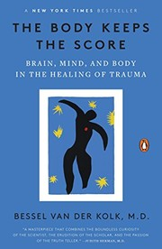

《身体从未忘记》
书·Bessel van der Kolk, 2014·The Body Keeps the Score: Brain, Mind, and Body in the Healing of Trauma

创伤、身体与治疗方法的综合读物；具体疗法仍需结合指南判断。
- 作者
- Bessel van der Kolk
- 年份
- 2014
- 难度
- 进阶
- 类型
- 概览
- 所属学派
- 创伤研究与 PTSD
- 核心理论
- 身体与创伤
版本
- 中文版 《身体从未忘记》 [美] 巴塞尔·范德考克 · 李智 译 · 机械工业出版社 · 2016 豆瓣 9 分（6248 人评价） 豆瓣页面 ↗
- 英文版 The Body Keeps the Score: Brain, Mind, and Body in the Healing of Trauma Bessel van der Kolk · Viking, first edition · 2014 Open Library ↗